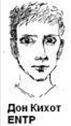

О соционике
Соционика – это теория, описывающая типы личности и их взаимодействие на основе различных психических функций.
Согласно соционике, существует 16 типов личности, которые классифицируются по четырём дихотомиям:
- рациональность <---> иррациональность
- логика <---> этика
- сенсорика <---> интуиция
- экстраверсия <---> интроверсия
Типы соционики
-
Дон Кихот (ENTP, Искатель)
– интуитивно-логический экстраверт

- идеалист, новатор, исследователь
- обладает богатым воображением и стремлением к новым знаниям -
Дюма (ISFP, Миротворец)
– сенсорно-этический интроверт
- добрый, заботливый, гармоничный
- стремится к спокойствию и комфорту в окружении
-
Гюго (ESFJ, Энтузиаст)
– этико-сенсорный экстраверт
- дружелюбный, жизнерадостный, поддерживающий
- умеет создавать праздничную атмосферу и заботиться о других
-
Робеспьер (INTJ, Стратег)
– логико-интуитивный интроверт
- системный, стратегический, независимый
- обладает способностью к долгосрочному планированию и анализу
-
Жуков (ESTJ, Администратор)
– сенсорно-логический экстраверт
- решительный, организованный, деловой
- способен к управлению и мобилизации ресурсовв -
Есенин (INFP, Лирик)
- интуитивно-этический интроверт
- творческий, чувствительный, эмоциональный
- склонен к глубоким переживаниям и мечтам -
Гамлет (ENFJ, Наставник)
– этико-интуитивный экстраверт
- харизматичный, выразительный, эмпатичный
- способен вдохновлять и вести за собой -
Максим Горький (ISTJ, Инспектор)
– логико-сенсорный интроверт
- практичный, дисциплинированный, надежный
- ценит порядок и стабильность -
Гексли (ENFP, Советчик)
– интуитивно-этический экстраверт
- энергичный, креативный, вдохновляющий
- легко находит общий язык с людьми -
Габен (ISFP, Мастер)
– сенсорно-логический интроверт
- с покойный, чувствительный, утонченный
- умеет наслаждаться жизнью и создавать комфорт -
Наполеон (ESTP, Политик)
– этико-сенсорный экстраверт
- энергичный, харизматичный, волевой
- способен к быстрому принятию решений и манипулированию ситуацией -
Бальзак (INTP, Аналитик)
– логико-интуитивный интроверт
- размышляющий, проницательный, скептичный
- обладает аналитическим умом и глубиной мышления -
Джек Лондон (ENTJ, Полководец)
– логико-интуитивный экстраверт
- амбициозный, решительный, стратегический
- способен к организации и управлению большими проектами -
Драйзер (ISFJ, Защитник)
– этико-сенсорный интроверт
- заботливый, надежный, ответственный
- стремится к созданию безопасной и уютной обстановки -
Штирлиц (ESTJ, Лидер)
– логико-сенсорный экстраверт
- организованный, целеустремленный, эффективный
- способен к руководству и достижению поставленных целей -
Достоевский (INFJ, Гуманист)
– этико-интуитивный интроверт
- сочувствующий, интуитивный, глубокий
- способен к пониманию человеческих эмоций и страданий
Или вот тут